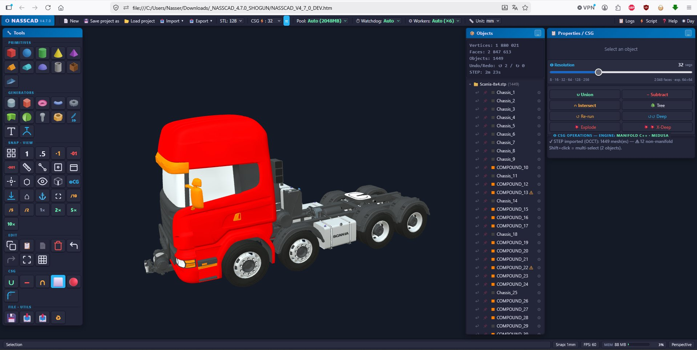

Free STEP Viewer
Open a received mechanical model and inspect its assembly, visible geometry and available annotations. NASSCAD supports STEP AP203, AP214 and AP242 workflows through OpenCASCADE and MEDUSA.
At a glance
- STEP formats
- AP203, AP214 and AP242 assemblies; available names, colours and supported PMI.
- Processing
- Local browser processing; Windows x64 Setup and Portable include MEDUSA.
- Scope
- Viewing and inspection. Import does not restore original sketches or feature history; retain the source STEP.
- Licence
- Free for personal, educational, professional and commercial use under AGPLv3. Your original models remain yours; software distribution and modified network versions have source-sharing obligations.
Open and inspect a STEP assembly
- Start the browser or Windows edition. Save any existing project before importing another model.
- Use Import and choose the STEP file. Allow time for tessellation; large assemblies can take substantially longer than a small part.
- Frame the model and use the Objects panel to select, hide or isolate parts as available.
- Inspect the visible geometry, part names and source colours that were retained.
- Where the file and importer provide PMI, inspect the engineering annotations in their panel and in the 3D view.

Browser or bundled MEDUSA?
The Windows Setup and Portable editions include MEDUSA and manage its lifecycle automatically. Browser users can use available browser import paths and optionally run a compatible standalone MEDUSA companion. Keep the edition and engine version consistent when investigating an import problem.
Resolution and triangle budgets affect how surfaces are displayed and how much memory a scene needs. A visible triangle mesh is a sampled representation of the source surfaces. Increasing the resolution improves sampling at a cost; it does not repair an open source shell.
PMI and source data
STEP AP242 can contain product and manufacturing information, including semantic or graphical annotations. Availability varies by source file and writer. NASSCAD displays supported information when it is present; an empty PMI panel does not by itself prove that the source file has no engineering metadata.
Viewer scope and export limits
Imported STEP models are viewing and inspection workflows. Some bodies may be open shells rather than closed solids. NASSCAD does not promise to repair every industrial assembly, turn every shell into a solid, or preserve every source feature and annotation through export.
STEP export can reuse available referenced source B-Rep or use available tessellated representations, depending on the source and chosen engine. Inspect exported files in the receiving CAD application. Keep the original STEP alongside the NASSCAD project.
When an import is slow or incomplete
Check the log for the first meaningful error, available memory, engine availability and performance settings. Try a smaller representative file before diagnosing a full assembly. A very large stress file may require prolonged processing; a long load is not evidence of a successful or failed import on its own.
For supported controls and current limitations, read STEP files and assemblies, PMI annotations and STEP export options.
Opening STEP files: common questions
Can I view a STEP file without uploading it to a cloud service?
NASSCAD processes model files locally. Use the browser edition to open supported STEP files without an account, or choose the offline Windows STEP viewer and CAD edition with MEDUSA included.
Is a STEP viewer the same as a parametric CAD editor?
No. Viewing an imported assembly does not restore its original sketches, constraints or feature history. You can inspect the imported geometry and use supported modelling operations, but retain the source STEP and verify any exported result.
What about building models?
For supported BIM geometry, use the local IFC building-model viewer. To create a printable part, follow the CAD for 3D printing tutorial.